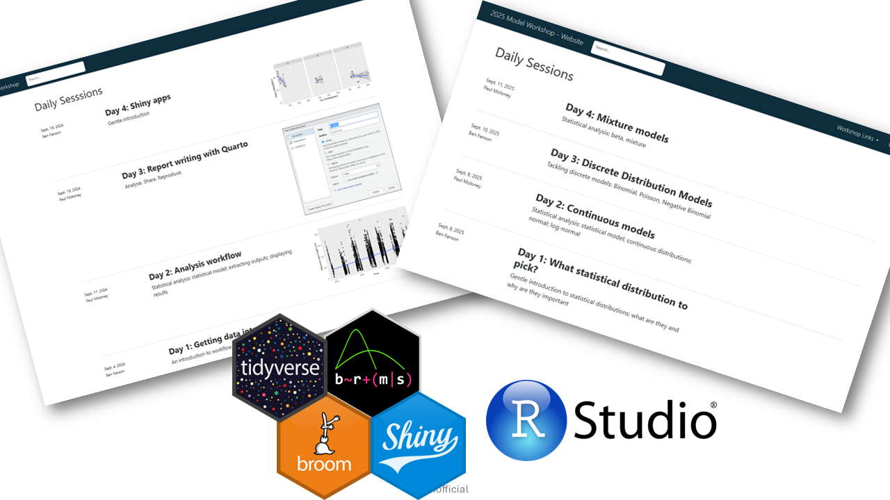
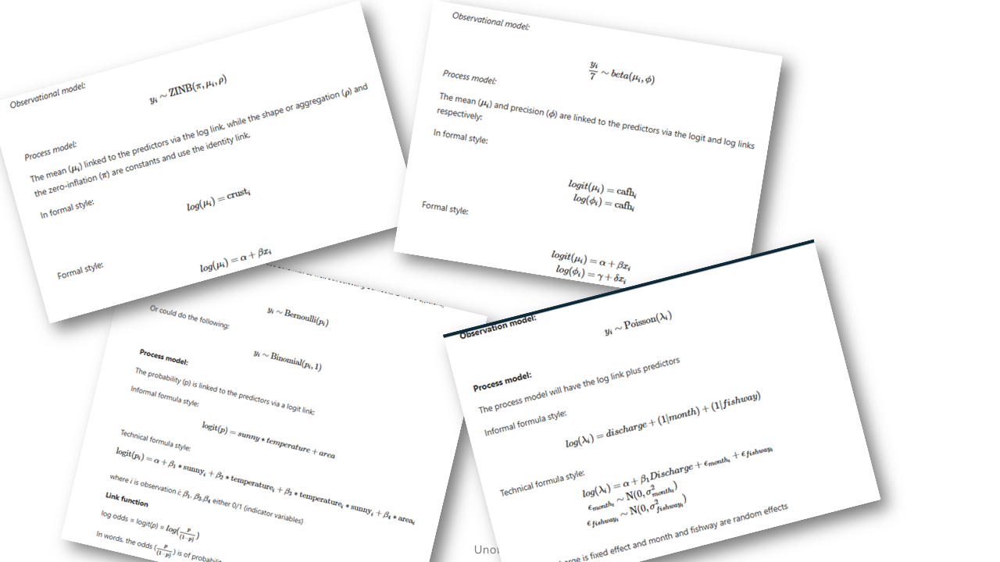
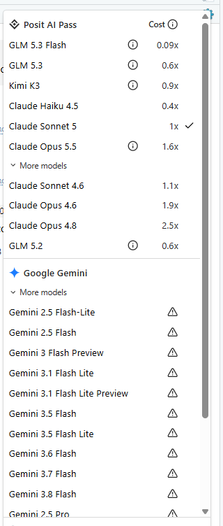

flowchart LR
AI[["AI"]]
AI --> ML["Machine learning<br> (NNs, CNNs, Boosted)"]
AI --> LLM["LLMs"]
LLM --> bot["Hyped-up search engine"]
LLM --> agent["Autonomous(-ish) Agent"]
Module 1: AI in Data science: A paradigm shift?
Discussion on integrating AI into our workflow
Housekeeping
- Workshop website https://bfanson.github.io/2026_Workshops/
Agenda
- Set the stage/background so on similar footing
- Use an example to solidify some of the ideas
- Morning Tea 😁
- Discussion of topics
Note
This is more of guided-group conversation than “lecture”…feel free to interpret at any point if you have a question, if you want to test an idea, if we said something wrong
Confession upfront
Confused as what is needed in workshops now

We talked about fun stuff like…😁

Teaching is confused
Some of best coders in the world are not coding anymore
NoteSome reasons
- Trained on billions of line of code
- Clean coding…writes very disciplined code
- Ridiculously fast
- Reads warnings and errors outputs😉
LLms…a few comments
- LLMs (by themselves) can be surprisingly bad
<< add in image of cannot count or multiply or even know today’s date >>
<< if I go this route, can I use posit ai or copilot for the examples>> << we struggle ourselves with such large numbers, but we have tools that can help us. LLMs do the same>>
Note
Main Point: Be careful about judging LLMs solely on its “stupidish” moments. Often if you give it the right tools and context, it will succeed.
Agents
graph LR
H("👤 Human") --> AI[["Agent/Harness"]]
AI --> LLM["LLM: the brain (or IT)"]
AI --> TS["Tools" ]
AI --> SK["Skills" ]
AI --> CT["Context"]
Harnesss
Software that “manages” the LLM, the skills, tools, grabbing context. But, also come in their own flavour and own set of tools, skills, etc. Thus, the software can identify LLMs weaknesses and mitigate/augment
Example such as…
| Tool | Is it a harness? | Is it an agent? | Better description |
|---|---|---|---|
| Posit Assistant / Posit AI | ✅ Yes | ✅ Yes | A data science agent built on a data-science-specific harness |
| Claude Code | ✅ Yes | ✅ Yes | A coding agent with its own harness |
| Codex | ✅ Yes | ✅ Yes | A coding agent powered by the Codex harness |
| Gemini CLI / Gemini Code Assist | ✅ Yes | ✅ Yes | A coding and general-purpose agent built on Google’s Gemini harness |
LLMs

Tools
Allows it to “touch” your computer…
| Tool Category | Example Tool | Purpose | Example Agent Action |
|---|---|---|---|
| File System | Read File | Read file contents | Examine a Quarto document before editing |
| File System | Write File | Create new files | Generate a new R script |
| File System | Edit File | Modify existing files | Update a function in a package |
| File System | List Files | Explore directories | Discover project structure |
| Search | Grep / Search | Find text patterns | Locate all references to a function |
| Terminal | Bash Shell | Execute commands | Run R CMD check |
| Terminal | Git | Version control | Create a commit after modifications |
| Programming | R Runtime | Execute R code | Fit a GAM model |
Skills
Higher level, more like specialised agents: biometrician, spatial analyst, report writer, shiny app creator
| Skill | Example Task |
|---|---|
| Statistician | Fit and compare GAM, GLMM, and HMM models for fish movement data, evaluate assumptions, and identify the best-supported model using AIC. |
| Spatial Analyst | Create movement maps from acoustic telemetry data, calculate home ranges, and analyse river network connectivity using sf, terra, and sfnetworks. |
| Report Writer | Generate a Quarto report that summarizes study objectives, methods, results, figures, and key findings for stakeholders. |
| Shiny App Creator | Build an interactive dashboard that allows users to explore telemetry detections, filter by species and date, and visualize movement patterns on a map. |
Iteration efficiency
graph LR
H("👤 Human")
AI[["Coding<br> agent"]]
H --> AI
AI --> H
AI --> W['write code']
W --> R['run code']
R --> E['find errors']
E --> W
Costs
Not trivial
Have to play around to get a feel for. Models differ greatly with respect to cost.
Example with soil crust
Copilot approach
Agent approach
NoteAdvantages
- Copy/paste tedious
- Gives context from your R project
- Iterates on itsself…testing the code it writes
- Fits a natural workflow
- helps
Paradigm shift
How are humans fitting in the data science/analyst role
graph LR
H("👤 Human")
H <--> DB[["Database Agent"]]
H <--> STATS[["📊 Statistics Agent"]]
H <--> GIS[["🗺 GIS Agent"]]
H <--> WRITER[["📝 Writer Agent"]]
H <--> APP[["Shiny App Agent"]]
How are you using agents?
workflow efficiency
graph LR
AI[["LLM"]]
AI --> WF["Workflow"]
AI --> TH["Sounding board"]
WF --> Pkg["R Packages"]
WF --> Db["Database"]
WF --> QC["QC tester"]
TH --> PI["Project creation"]
TH --> SAP["Analysis idea"]
TH --> PR["Communicating"]
Discussion topics
How are we going to get trained on it? Not fall behind behind everyone else
Are we heading to a standardised workflow? suite of skills MD files
Ensure that it is an active learning/developing process? preclude Intellectual laziness?
Are we developing ARI-wide agents? Are we sharing standard skill sets for specific agents?
allowing us to do things we should have been doing the whole time…😔 [documentation, additional QC test]
Vibe-coding module: what would be useful???
Here again, we are showing our confusion on how to proceed.